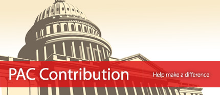

REALTOR® Political Action Committees (PACs) are your best investment in real estate. In today's political arena, you need strength in numbers. By joining thousands of other REALTORS®, you make a real impact with local, state and federal policy makers. And when it comes to opening their doors, REALTOR® PACs have the power to deliver your views.
SDAR encourages you to get involved in your industry by calling SDAR's Government Affairs Department. Let us know where you want to plug in with your time and financial support by calling (858) 715-8038 or emailing govaffairs@sdar.com today.
SDAR's RPAC Fund
C.A.R's RPAC
REALTOR® Party